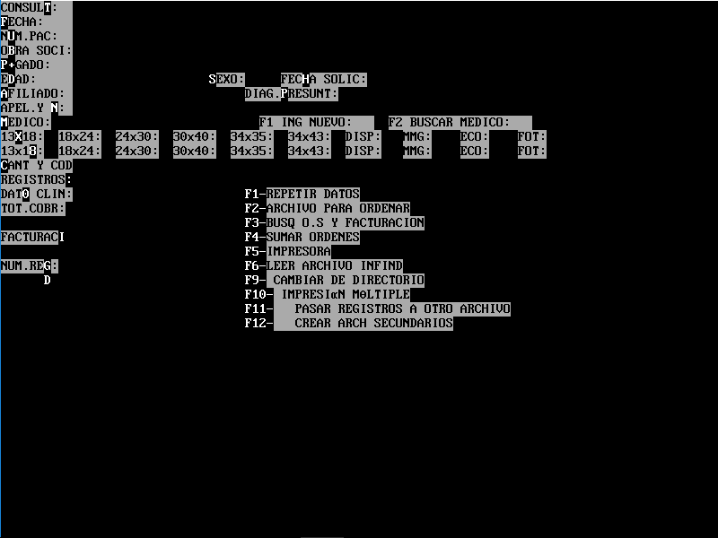
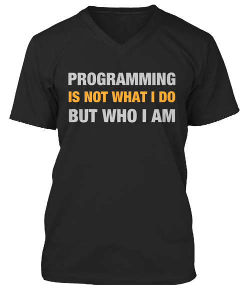

Elije tu propia aventura:
Quiero ser un Desarrollador
Sobre la charla
- Como comienzo?
- Aprendiendo
- Mitos
- Eligiendo una tecnología
- Contribuir al Open-Source
- Conseguir trabajo
- Seguir creciendo
- Preguntas
Como comienzo?
- Requerimientos:
- Curiosidad
- Imaginación
- Paciencia
- Disposición a invertir tiempo
Como comienzo?
- Cursando una carrera Universitaria/Terciaria
- Sugerencia de algún conocido
- Programa de capacitación
- Cursos, charlas, pasantías
- Asistiendo alggún evento
- Iniciativa propia
Aprendiendo
Recuerden:
No es sobre tener tiempo.
Es sobre hacerse el tiempo.
Aprendiendo
- Eligir una tecnologia/lenguaje
- Comenzar a investigar
- Buscar un proyecto
- Practicar
- Investigar
- Probar
- Leer
- Practicar
- Leer
- Y luego ...
Aprendiendo
- Leer
- Practicar
- Leer
- Practicar
- ....
Mitos
Hay que ser muy inteligente
Proactivo, responsable, buena voluntad.
Mitos
Hay que ser bueno en matemáticas
Curiosidad, Imaginación, Paciencia.
Mitos
Hay que comenzar de joven
Mitos
La gente grande no se dedica a esto
Mitos

Margaret Hamilton
Mitos
Hay que graduarse en una carrera relacionada al rubro del software
Mitos
No hace falta estudiar o recibirse en una carrera relacionada al rubro del software
Mitos
- El mejor lenguaje es X

Contribuir al Open-Source
- Buscar y sumarse a una comunidad
- Conocer gente
- Aprender cosas nuevas
- Muchas oportunidades
- Contribuir === Aprender
Conseguir trabajo
- Armarse un CV claro y consiso
- Actividad en Github, Bitbucket, Linkedin, ...
- Escribir en un Blog, Reddit, Hackernews, ...
- Participar en eventos (presenciales/online)
Buenos tips
- Divide y vencerás
- Comprender el problema es la mitad de la solución
- Es complejo, cuesta comprenderlo? Usa dibujos, diagramas, escribilo
- No lo podes resolver? Tomate un descanso
- Seguis bloqueado? Comentale a alguien
- Conozcan las buenas prácticas
- Conocé tus herramientas
Buenos tips II
- Siempre aprendiendo nuevas cosas
- No solo la parte tecnica es importante
- Enseñar, ayudar a otros
- Conocete a vos mismo
- Piensen diferente
- Tomen desafios